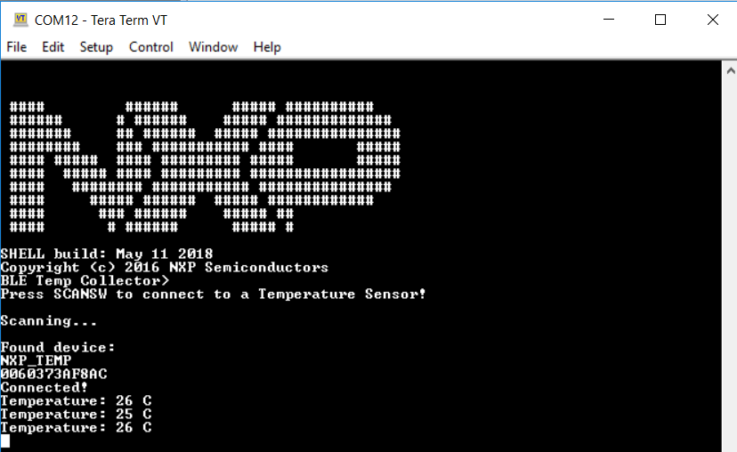

The setup requires two supported platforms, one for the temperature sensor and one for the temperature collector.
- Open a serial port terminal and connect it to the temperature collector board, in the same manner as described in 5.1.3. The start screen is displayed after the board is reset.
At first the LEDs are off on both devices.
- To start advertising on the sensor, press the WAKESW button and CONNLED lights up.
The sensor enters into the gAppDeepSleepMode_c deep-sleep mode (1 - LLS or 8 - VLLS), which
means that the MCU wakes up on any packet from the Link layer, in this case the connect
request. If no connection is established in an interval of 30 seconds, the sensor stops
advertising and enters into the cPWR_DeepSleepMode again. CONNLED turns off.
- To start scanning on the collector, press the WAKESW button and CONNLED lights up.
The device wakes up, enters into the cPWR_DeepSleepMode deep-sleep mode 6, scans and
connects to a compatible sensor device. If no connection is established within 10 seconds,
the collector stops scanning and enters deep-sleep mode (for QN9090/K32W061 is deep sleep
mode 3) again. CONNLED turns off.
- If the collector connects to a sensor node, it bonds (if no bond was previously
made), does service discovery (only the first time it connects with the sensor) and
configures notification and waits for notifications from the sensor for 5 seconds. If no
data is sent, the node disconnects and re-enters cPWR_DeepSleepMode. The sensor exits low
power and sends a notification with the value of the temperature read through an ADC from
the thermistor, if present, or random generated if not.
Figure 1. Tera Term – Output Console on Temperature Collector

- Subsequent key pressing triggers other notifications for the collector. If no key is
pressed in an interval of 5 seconds, the sensor node disconnects and re-enters
cPWR_DeepSleepMode.